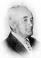
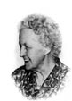
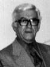

JOSEPH-ARTHUR-ÉVANGÉLISTE BOLDUCfiche familiale
*******************************************************************************
|  |
Joseph-Arthur-Évangéliste Bolduc
décède à l'âge de 86 ans
Naissance en juin 1880
Décès le 9 septembre 1966 à Disraëli, cté Wolfe
Père: Anselme Bolduc
Mère: Marie Couture |
Mariage le 27 juillet 1908 à Ste-Luce de Disraëli
|  |
Épouse: Estelle Gosselin
décède à l'âge de 87 ans
Naissance le 6 juillet 1887
à St-Magloire, cté Bellechasse
Décès le 11 avril 1975 à Sherbrooke
Père: François-Xavier Gosselin
Mère: Mathilda Garand |
*******************************************************************************
Enfant 1 Evangéliste-Alphonse-Joseph BolducNaissance 13 fév 1910 à Disraëli, cté Wolfe
Baptême: 13 fév 1910 à Ste-Luce de Disraëli
Mariage le 16 nov 1942 à Cochrane, ON
Conjointe: Marie-Rose BilodeauPère: Joseph BilodeauMère: Délima Garant
-------------------------------------------------------------------------------
|  |
Enfant 2 Rosario-Édouard-Joseph Bolduc
décède à l'âge de 65 ans.
Naissance 28 mai 1911 à Disraëli, cté Wolfe
Baptême: 28 mai 1911 à Ste-Luce de Disraëli
Décès le 29 jun 1976 à St-Élie-d'Orford, cté Sherbrooke |
Mariage le 6 jul 1936 à St-Jean-Vianney, cté Mégantic
1ère conjointe: Marie-Jeanne Lamontagne
Père: Joseph Lamontagne
Mère: Régina Roy
Mariage le 19 sep 1942 à St-Élie-d'Orford, cté Sherbrooke
2ème conjointe: Diana Corriveau
Père: Alphonse Corriveau
Mère: Séraphie Lemelin
-------------------------------------------------------------------------------
Enfant 3 Marie-Amanda-Irène BolducNaissance 5 sep 1912 à Disraëli, cté Wolfe
Baptême: 5 sep 1912 à Ste-Luce de Disraëli
Mariage le 25 mars 1940 à St-Michel de Sherbrooke
Conjoint: Alfred MorinPère: Joseph MorinMère: Ernestine Lemieux
-------------------------------------------------------------------------------
|
|
Enfant 4 Laval-Louis-Joseph Bolducdécède à l'âge de 78 ans. Naissance le 25 avril 1914 à Disraëli, cté Wolfe Baptême le 26 avril 1914 à Ste-Luce de Disraëli Parrain Louis Laflamme, marraine Adèle Gosselin. Décès le 17 mar 1993 à Val-D'Or, cté Abitibi Funérailles le 20 mars 1993 à Val-D'Or Sépulture au cimetière de Val D'Or Profession mineur. (ses ancêtres)Mariage le 26 juillet 1945 à St-François-de-Sales de Destor Conjointe: Claire Henrin. 4 juin 1921 d. 8 février 2007 (sa famille) |
-------------------------------------------------------------------------------
Enfant 5 Eugène-Gérard-Joseph BolducNaissance 10 sep 1915 à Disraëli, cté Wolfe
Baptême: 11 sep 1915 à Ste-Luce de Disraëli
Mariage le 30 déc 1939 à Ste-Jeanne-d'Arc de Sherbrooke.
Conjointe: Marie-Paule LamoureuxPère: Édouard LamoureuxMère: Rose-Anna Brouillard
-------------------------------------------------------------------------------
Enfant 6 Léopold BolducNaissance 8 août 1918 à Disraëli, cté Wolfe
Baptême: 9 août 1918 à Ste-Luce de Disraëli
Décès: avant 1966
-------------------------------------------------------------------------------
Enfant 7 Jeanne-Yvonne-Marie BolducNaissance 8 mars 1922 à Disraëli, cté Wolfe
Baptême: 12 mar 1922 à Ste-Luce de Disraëli
Conjoint: Clément Caron
-------------------------------------------------------------------------------
Enfant 8 Jean-Paul-Joseph BolducNaissance 13 avril 1925 à Disraëli, cté Wolfe
Baptême: 13 avr 1925 à Ste-Luce de Disraëli
Mariage le 21 jul 1951 à St-Vincent-de-Paul de Montréal
Conjointe: Jeannine AndersonPère: Adrien AndersonMère: Valéda Dion
*******************************************************************************